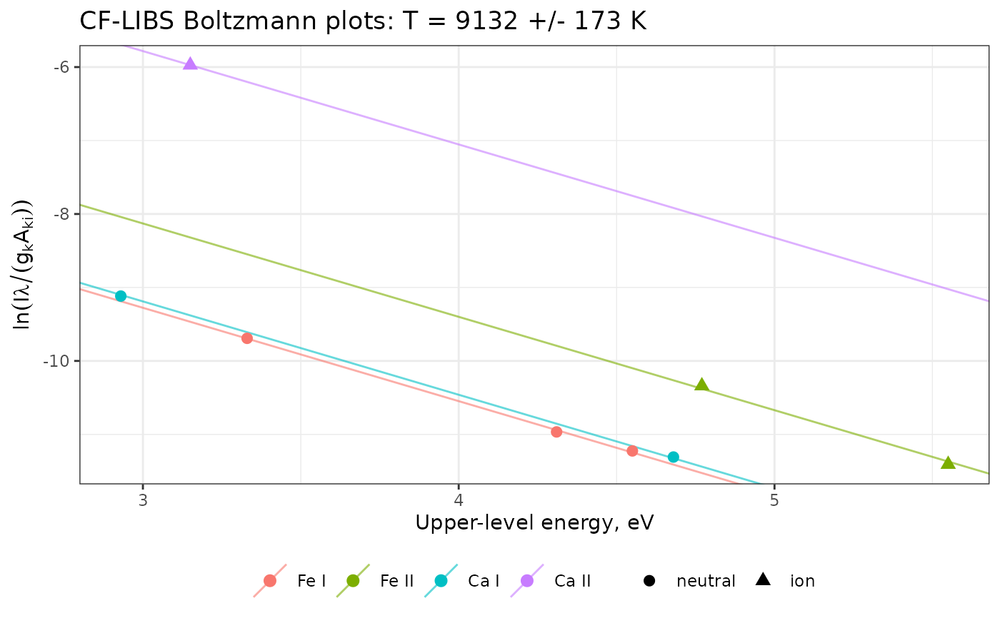

Estimates the elemental composition of a sample from the intensities of its emission lines, without calibration standards, by the calibration-free LIBS (CF-LIBS) method of Ciucci et al. (1999).
Usage
cf_libs(
lines,
electron_density = NULL,
temperature = NULL,
method = NULL,
partition = NULL,
ionization_energy = NULL,
reference = NULL,
units = "energy",
timeout = 120
)Arguments
- lines
A data frame with one row per line and columns
species(such as"Ca I"or"Ca II"; stages I and II),intensity(integrated line intensity),wavelength(nm),Aki(s\(^{-1}\)),gkandEk(eV), such as the lines ofnist_lines()with measured intensities.- electron_density
The electron density, in cm\(^{-3}\). Needed for the elements observed in one ionization stage only; without it, only the observed stage of these elements is counted, with a warning.
- temperature
The plasma temperature, in K. By default, it is estimated from the lines.
- method
"boltzmann"or"saha-boltzmann"(see details). By default,"saha-boltzmann"whenelectron_densityis given,"boltzmann"otherwise.- partition
The partition functions:
NULL(default) to compute them from the levels of the NIST Atomic Spectra Database (seenist_levels(); needs an internet connection), a data frame of levels with columnsspecies,gandenergy(eV), or a function of the species and the temperature returning the partition functions.- ionization_energy
The ionization energies of the neutral atoms, in eV, named by element (
c(Ca = 6.113)) or neutral species (c("Ca I" = 6.113)): for all elements with the Saha-Boltzmann method, and otherwise for the elements observed in one stage only and to truncate the partition functions computed from levels. By default, they are taken from the NIST database (seenist_ionization_energy()).- reference
An optional known mass fraction of one element, named by the element, such as
c(Ca = 0.35), used instead of closure.- units
The units of
intensity:"energy"(default) or"photons", as inboltzmann_plot().- timeout
The timeout of the NIST downloads, in seconds. Default is 120.
Value
An object of class specproc_cflibs, a list with
composition: a tibble with, for each element, theatomic_fractionandmass_fraction, and thestagesobserved (a stage computed by the Saha equation is noted "Saha");species: a tibble with, for each species, the number of lines, theinterceptof its own Boltzmann plot, itspartitionfunction, its relative numberdensityand whether it wasobserved;temperature,temperature_se(K) andelectron_density;points: the points of the plots (for the Saha-Boltzmann method, the abscissa of ions includes the ionization energy and the ordinate the Saha correction),intercept, the intercept of each plot, andfit, thelmfit;methodand the number ofiterationsof the Saha-Boltzmann fit.
Use plot_boltzmann() to draw the Boltzmann plots.
Details
In a plasma in local thermodynamic equilibrium (LTE), optically thin and of the same composition as the sample, the intensity of a line of species \(s\) satisfies $$\ln\frac{I\lambda}{g_k A_{ki}} = -\frac{E_k}{k_B T} + \ln\frac{F C_s}{U_s(T)}$$ where \(C_s\) is the concentration of the species, \(U_s(T)\) its partition function and \(F\) an experimental factor common to all lines. The Boltzmann plots of all species are therefore parallel lines:
The temperature is estimated from their common slope, by a least-squares fit with one intercept per plot (unless
temperatureis given).The relative number density of each species follows from the intercept \(q_s\) of its plot, \(F C_s = U_s(T) e^{q_s}\).
The density of an ionization stage that is not observed is computed with the Saha equation, from the electron density (see
electron_density()) and the ionization energy.The factor \(F\) is eliminated by closure (the concentrations of the elements sum to 1), or, with
reference, by the known mass fraction of one element (internal reference), which is useful when some elements of the sample are not measured.
Two methods place the lines on the plots:
"boltzmann"(Ciucci et al., 1999): one Boltzmann plot per species, with its own intercept. The temperature rests on the range of upper-level energies within each species, often narrow (1 to 2 eV), so it can be imprecise."saha-boltzmann"(the default whenelectron_densityis given): one Saha-Boltzmann plot per element, on which the lines of the ion are placed with the Saha equation, as insaha_boltzmann_plot(). The energy range is extended by the ionization energy, which gives a much more precise temperature, and the ionization balance of each element follows from the Saha equation. It needs the ionization energies of all elements.
At least one plot needs two lines or more of different upper-level energies.
When the partition functions are computed from energy levels, the levels
of the neutral atoms above their ionization energy, lowered by the
Debye-Hückel correction when electron_density is given, are left out
(see partition_function()). This needs the ionization energies of all
elements observed as neutral atoms.
The mass fractions are computed from the atomic fractions with the
standard atomic weights. The result is only as good as its assumptions:
all major elements must be measured (with closure), the lines must be
optically thin (see self_absorption()), the intensities corrected for
the spectral response of the instrument, and the atomic data accurate
(prefer lines of accuracy B or better in nist_lines()).
References
Ciucci, A., Corsi, M., Palleschi, V., Rastelli, S., Salvetti, A., Tognoni, E. (1999). New procedure for quantitative elemental analysis by laser-induced plasma spectroscopy. Applied Spectroscopy, 53(8):960-964.
Tognoni, E., Cristoforetti, G., Legnaioli, S., Palleschi, V. (2010). Calibration-free laser-induced breakdown spectroscopy: state of the art. Spectrochimica Acta Part B, 65(1):1-14.
Examples
# Simulated lines of a plasma at 9000 K with 70% Fe and 30% Ca (atomic
# fractions), with made-up atomic data and partition functions
kB <- 8.617333262e-5
T <- 9000
U <- function(species, temperature) c("Fe I" = 30, "Fe II" = 40, "Ca I" = 3, "Ca II" = 2)[species]
lines <- data.frame(
species = c("Fe I", "Fe I", "Fe I", "Fe II", "Fe II", "Ca I", "Ca I", "Ca II"),
wavelength = c(371, 404, 438, 259, 275, 422, 445, 393),
Aki = c(1.6e7, 8.6e7, 5.0e7, 2.2e8, 2.1e8, 2.2e8, 8.7e7, 1.5e8),
gk = c(11, 9, 11, 10, 8, 3, 7, 4),
Ek = c(3.33, 4.55, 4.31, 4.77, 5.55, 2.93, 4.68, 3.15)
)
# number densities of each species, in arbitrary units
n <- c("Fe I" = 0.70 * 0.2, "Fe II" = 0.70 * 0.8, "Ca I" = 0.30 * 0.05, "Ca II" = 0.30 * 0.95)
set.seed(1) # 5% measurement noise
lines$intensity <- with(lines, n[species] / U(species) * gk * Aki / wavelength *
exp(-Ek / (kB * T)) * exp(rnorm(8, sd = 0.05)))
fit <- cf_libs(lines, partition = U)
fit
#> Calibration-free LIBS (8 lines, 4 species; Boltzmann plots)
#>
#> Temperature: 9132 +/- 173 K
#> Normalization: closure
#>
#> element atomic_fraction mass_fraction stages
#> Fe 0.6930 0.7588 I, II
#> Ca 0.3070 0.2412 I, II
plot_boltzmann(fit)
